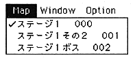
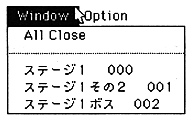

Select the area map you want to switch here. The area map to be edited is switched here, and this does not switch the current map.
The difference between the Map menu and the Window menu is that the Window menu is only displayed to refer to other map windows, not the map itself.
The sound simulator can register up to 128 map data.

Use this menu to browse other map information.